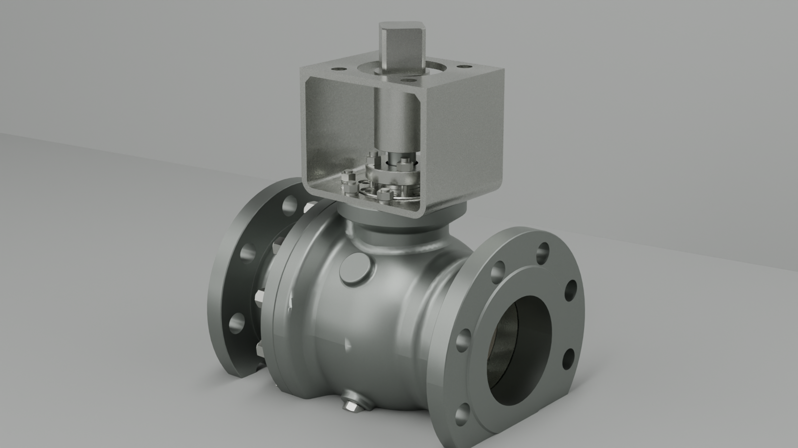
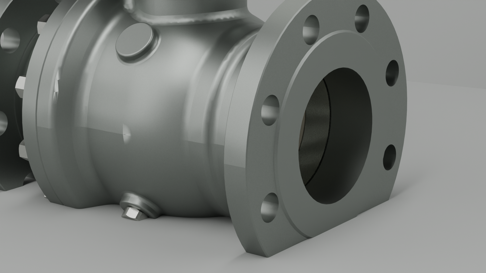
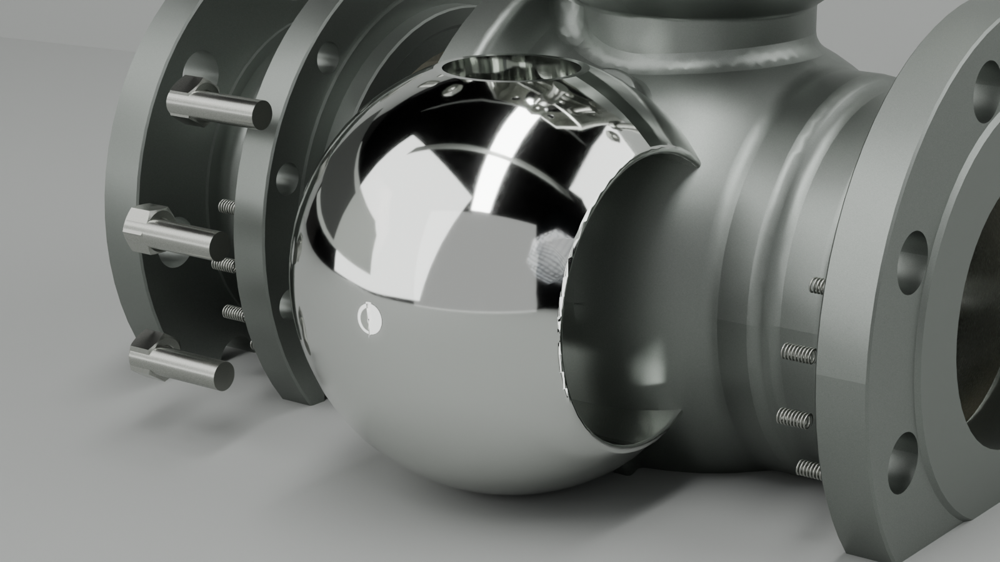

Goal 23 / STEP full-valve material v1 / Blender Cycles
固定式球阀整阀材质首版
本轮把 Goal 22 的 fine_r46 铸造缎面不锈钢作为起点，在 Goal 20 的 STEP-derived 整阀模型上做中灰钢感和铸后磨砂微调，只输出 still 用于材质审阅；不替换 hero，不渲染动画序列。
1600x900render size
138STEP mesh instances
6material families
3rendered stills



Manifest: render-manifest.json. Material status: material-status.md. Source mesh: ../goal20-blender-cycles-step-proof/goal20-step-mesh.glb. Material evidence: ../goal22-material-calibration-lab/cast-satin-roughness-ladder.json.